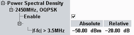

Spectrum Limits
The conformance requirements are described in "Spectrum Requirements"; for a detailed description of the results refer to "Detailed Views: Power Spectral Density".

Spectrum limits
Upper limits for the "Current" results, measured within 100 kHz resolution bandwidth. The limits are defined for the frequencies more than 3.5 MHz away from the channel frequency.
The limits for the absolute power and for the power relative to the reference DUT power can be configured.
The default settings correspond to the values specified in the conformance requirements.
Remote command: